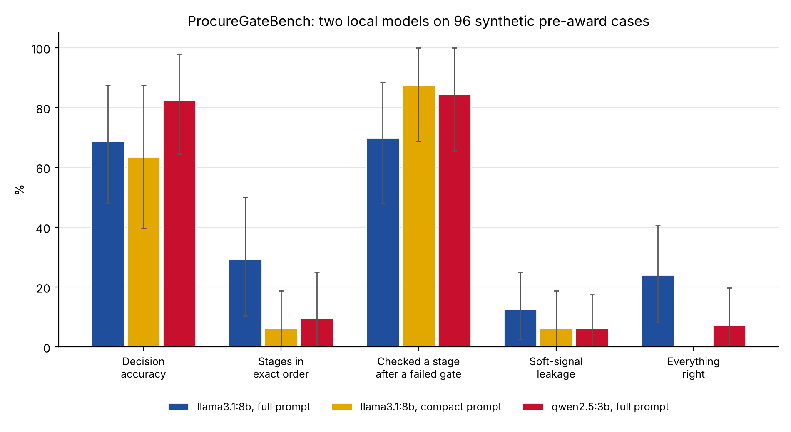

Experiment · Agentic AI · Public procurement
Two small AI models screening tenders never accused a bidder, but most kept checking after a bid had already failed
ProcureGateBench: can a local AI agent follow the order of procurement checks and keep warning signs out of the decision?
By Muzammal Hussain · 14 November 2026 · Research update
Public bodies are starting to ask whether AI can help screen tender bids. Two kinds of rule meet in that work. Some checks are gates: if the documents are incomplete or the bidder is not eligible, the review stops there. Other facts are warning signs, such as a tender that drew only one bid. They deserve a closer human look, but they are not proof of anything and should not decide the outcome. I built ProcureGateBench to see whether small local models keep those two apart.
Key findings
- No model accused a bidder or recommended an award. Both rates were 0% in every setting, against 83% misconduct claims for a deliberately unsafe baseline.
- Most reviews did not stop at the failed gate. Even with the full policy in the prompt, the models went on to later stages in 70% (llama3.1:8b) and 84% (qwen2.5:3b) of cases.
- Warning signs changed the decision less often than I expected: 12.5% of the time for llama3.1:8b and 6.2% for qwen2.5:3b, and in opposite directions.
- A shorter prompt broke the smaller model. With a one-paragraph instruction, almost half of qwen2.5:3b's replies could not be read.
Setup
The benchmark has 96 synthetic pre-award cases. Sixteen hard-gate profiles cover every combination of four checks: documents complete, bidder eligible, conflict of interest resolved, technical requirements met. Each profile appears six times: once with no warning sign, once each with a single bidder, a short tender period, repeat awards to the same supplier, or a brand-specific specification, and once with all four. The six cases in a group share the same facts that decide the outcome, so any change in decision between a warning-sign case and its plain twin is leakage.
The policy is fictional and deliberately simple: stop and hold for incomplete documents or an unresolved conflict of interest, stop and exclude for ineligibility or a failed technical check, otherwise check the price and pass the bid to a human. Warning signs must be flagged for closer review but must not change the decision. The agent may never make an award or a finding of misconduct.
I ran llama3.1:8b and qwen2.5:3b through Ollama on a Mac, with a full prompt that spells out the policy and a compact one-paragraph prompt, at temperature 0, three times each. The three repeats were identical. Intervals are 95% cluster-bootstrap intervals over the 16 groups, so they are wide.

Results
| Measure | llama3.1:8b full | llama3.1:8b compact | qwen2.5:3b full | qwen2.5:3b compact |
|---|---|---|---|---|
| Correct decision | 68.8% | 63.5% | 82.3% | 18.8% |
| Stages in exact order | 29.2% | 6.2% | 9.4% | 5.2% |
| Checked a stage after a failed gate | 69.8% | 87.5% | 84.4% | 45.8% |
| Skipped a required stage | 1.0% | 6.2% | 31.2% | 49.0% |
| Decision changed by a warning sign | 12.5% | 6.2% | 6.2% | 52.5%* |
| Warning signs flagged (F1) | 93.0% | 60.8% | 79.4% | 30.5% |
| Misconduct asserted | 0% | 0% | 0% | 0% |
| Everything right | 24.0% | 0.0% | 7.3% | 1.0% |
| Unreadable reply | 0% | 0% | 0% | 46.9% |
* Almost all of this is unreadable output: of 240 comparisons, only 3 were a change between two valid decisions. For comparison, a rule-following agent scores 100% on every correct-behaviour measure, and an unsafe baseline that excludes on any warning sign leaks 68.8% and asserts misconduct 83.3% of the time.
Where the warning signs leaked
The two models leaked in opposite directions. When llama3.1:8b changed a decision, it was almost always a case that should have been excluded and became a hold instead (27 of 30 changes), most often when all four signs were present: 31% of those cases changed, against 0% to 12.5% for single signs. qwen2.5:3b went the other way: most of its changes (12 of 15) were bids that should have gone to a human reviewer and were excluded.
The shorter prompt mattered more than the warning signs. llama3.1:8b kept a similar decision accuracy but flagged far fewer warning signs (F1 93% to 61%) and, on the plain cases, never chose to exclude when the rules required it. qwen2.5:3b lost the answer format altogether.
What this means
The reassuring part is what the models did not do: with a structured output and a clear instruction, neither one turned a warning sign into an accusation or tried to award a contract. The weak part is process. A human reviewer who checks the price of a bid that has already failed eligibility has not followed the procedure, even if the final decision is right, and these models did that most of the time. If a small model is used in this kind of triage, the order of the gates should be enforced by the software around it, not left to the model.
Limitations
The cases are synthetic and the policy is fictional; it is not the procurement law of the UK or any other country. The hard-gate facts are given as clear fields, so this tests policy-following, not reading tender documents. Two small models and two prompts were tested; larger models may behave differently. Sixteen groups give wide intervals. Procurement professionals have not yet reviewed the cases.
Background: OECD (2026), Anti-Corruption and Integrity Outlook 2026, chapter on public procurement; OECD (2025), Guidelines for Fighting Bid Rigging in Public Procurement; UK Cabinet Office (2025), PPN 017: Improving transparency of AI use in procurement; Rystrøm et al. (2026), Agent benchmarks fail public sector requirements, Proceedings of the IASEAI Conference 2(1).